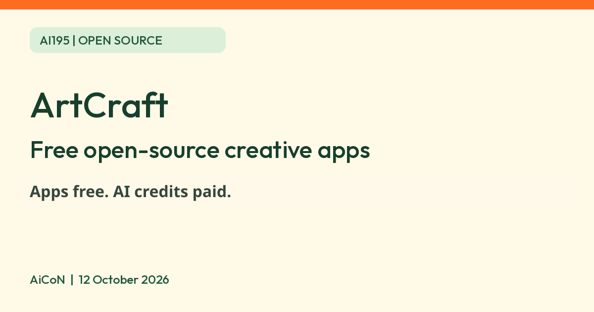

ArtCraft: free open-source creative apps in Rust, mostly still early, plus a paid AI studio
ArtCraft lists seven free open-source creative apps in Rust, several still early alpha. Its separate open-source AI studio offers paid credits, but subscriptions are optional and users can bring their own compute or third-party subscriptions.

What it is
ArtCraft is two things on one website, and the viral posts about it mix them up. First, getartcraft.com/apps lists seven "Crafting Apps": PhotoCraft (image editor), VectorCraft (vector illustration), FilmCraft (video editing), LightCraft (photo library and raw developer), PdfCraft (PDF tools), EffectCraft (motion graphics) and DesignCraft (page layout). The site says they are native apps written in Rust, open source, free to use, and run on your own files with "no cloud round-trips". Second, ArtCraft itself is an AI image and video studio: its GitHub page calls it an "IDE for interactive AI image and video creation" that connects to outside AI models.
Is it free
The seven Crafting Apps are free. Each app page says "Free and open source", and the apps page says every line is on GitHub under permissive licences. The AI studio software is also open source, but AI generation has a separate cost. The current pricing page explicitly says subscriptions are optional: you can bring your own compute and third-party subscriptions. It also offers one-time credit packs, which it says never expire. We did not confirm a free hosted generation allowance, supported local-model setup or every external provider cost. The limited-time Basic offer is about ₹970 per month ($10), or about ₹776/month equivalent ($8) billed as $96 yearly, about ₹9,312 upfront. Basic includes 1,000 monthly credits. INR estimates use a rounded ₹97 per dollar based on Mataf checked 12 October 2026; taxes, bank conversion and Indian checkout prices are unverified. The page says cancel anytime and credits are refunded if generation fails, but we did not verify cancellation mechanics or cash-refund terms. Verify the selected billing interval, renewal, credit rules and final total before payment.
What exists and what is promised
- Treat these as evolving, pre-1.0 software, not established replacements for production work. The apps page labels PhotoCraft and PdfCraft "Early alpha" and LightCraft and DesignCraft "In development". We did not establish a release-maturity label for VectorCraft, FilmCraft or EffectCraft. DesignCraft is listed as In development on the lineup page. Version numbers on the app pages are 0.6 to 0.8.
- PhotoCraft advertises layered PSD and PSB support, but website and README compatibility test counts differ. More importantly, its README says it is not yet a Photoshop replacement for daily professional work, with gaps in AI/generative features, typography/pro workflows and plug-ins. We did not run a compatibility test. Verify layers, fonts, colour and exports on copies of your own files before relying on it.
- Installers are listed for macOS, Windows and Linux (FilmCraft lists those three only). Several apps also run in a browser tab.
- The claim that this is "every single Adobe app" or a match for Adobe is not on ArtCraft's pages. The site lists seven apps and calls them early. The claims that it is "vibecoded" or under 50MB are not on the pages we read.
Is there any AI in the apps?
The apps page says every app can be driven from a command line, a JSON control channel or an MCP server, "built for automation and AI agents". That is a control interface for automation and other AI agents. It does not establish a bundled, free generative-AI allowance. PhotoCraft's page mentions "on-device selection" tools that run on your machine. AI generation is the separate ArtCraft studio, whose repository lists a 62-model catalogue with disabled/restricted entries. That list is not proof that all models are available to every user. Provider accounts, subscriptions, permissions and model costs may apply.
Is it available in India
Public pages and repositories loaded. Crafting Apps advertise local downloads for macOS, Windows and Linux, but we did not download or run an installer in India. AI studio account/payment availability in India was not tested. Check platform/build and hardware needs first; local processing is not a guarantee of compatibility.
How to try it
- Go to getartcraft.com/apps and pick one app, for example PhotoCraft.
- Use the app page's official standalone installer or ArtCraft Launcher links for your OS. PhotoCraft lists SHA-256 checksums for download verification. Avoid random reposted installers; source-code licences do not establish installer safety.
- Keep your own work backed up and test only copies. Check opening, edits and exports before replacing a tool in your workflow. We did not install or scan binaries.
Limits and privacy to know
- Early alpha software can crash or lose work. AiCoN advice: try it on copies of your files.
- The site says the apps run locally on your own files. This local-processing claim applies to Crafting Apps, not every studio workflow or third-party service. AI studio workflows can use outside providers. We did not locate readable first-party privacy/terms links on the public home/pricing/app screens or through targeted search. Data retention, training use, deletion, provider-specific handling and payment terms remain unverified. Do not upload confidential work or connect provider accounts until those terms are clear. A free/open-source licence is not a privacy promise.
- The ArtCraft studio repository lists an MIT or Apache-2.0 licence, and PhotoCraft's current README also says dual MIT or Apache-2.0. We did not check the licence of each of the other apps.
- We did not download, install, execute, upload files, connect AI providers, generate output, purchase credits or test cancellation. Descriptions and advertised features are source-based, not our test results.
Frequently asked questions
Is ArtCraft free?
The seven open-source Crafting Apps are free. The AI studio is open source and can be used without a subscription with your own compute or third-party subscriptions, according to its pricing page. Hosted Basic credit plans are currently about ₹970/month ($10), or $96 billed yearly. Free generation was not established.
Can this replace Adobe today?
Do not assume so. PhotoCraft's README explicitly says it is not yet a daily-professional Photoshop replacement. Several apps are early alpha or in development, and we did not test any workflow.
What changed since this post?
Checked 12 October 2026. We clarified that studio subscriptions are optional, made annual upfront cost explicit, corrected PhotoCraft's dual licence, and separated app controls from free AI generation. We added compatibility, download and privacy unknowns. No installer or AI workflow was tested.
Sources: Apps, PhotoCraft, Pricing, ArtCraft on GitHub, PhotoCraft on GitHub, Mataf USD/INR. Checked 12 October 2026.